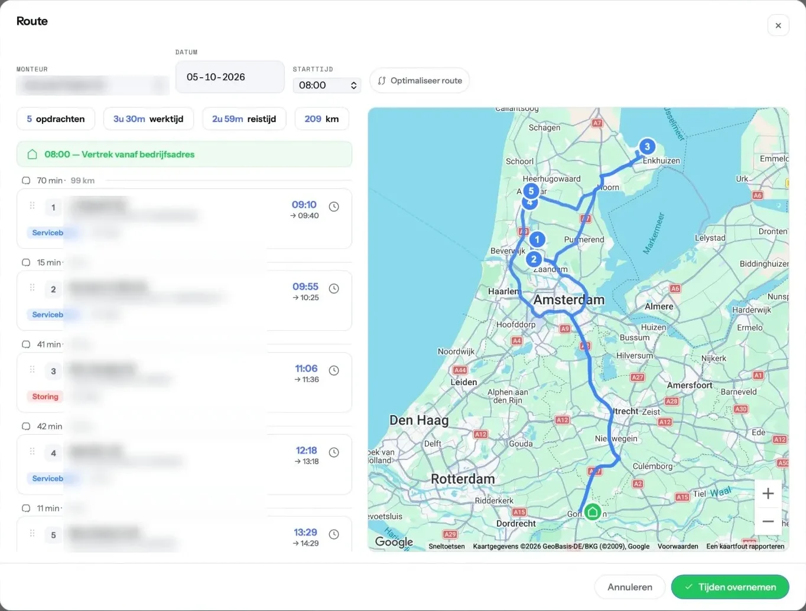
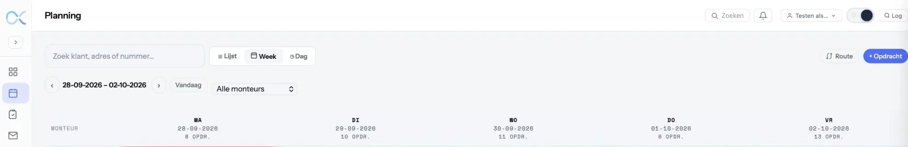

De brug tussen planner en monteur.
Kantoor en veld in één omgeving — planning, digitale werkbonnen en rapportage. Van de eerste opdracht tot de afgeronde werkbon.

- Opdrachten
- 5
- Werktijd
- 3u 30m
- Reistijd
- 2u 59m
- Afstand
- 209 km
Een echte dagroute uit een live-omgeving. De klantnamen zijn onherkenbaar gemaakt — jouw klantgegevens blijven van jou.
Alles op één centrale plek.
Veel installatie- en servicebedrijven regelen hun planning met een eigen mix van systemen, spreadsheets en losse lijstjes — overal net iets anders, nergens centraal. Flow8 brengt het samen.
Installatiebedrijven
Kantoor en veld in één omgeving, met dezelfde gegevens aan beide kanten.
Serviceklanten
Vaste klanten en terugkerend onderhoud bij elkaar, inclusief contract en historie.
Machines & installaties
Gekoppeld aan de klant, inzichtelijk en klaar voor onderhoud of reparatie.
Het kloppend hart van je werkdag.
Plan met route-optimalisatie, stuur je monteurs aan en handel werkbonnen digitaal af — alle dagelijkse uitvoering in één module.
- Slimme dagplanning: minste kilometers en reistijd
- Lijst-, week- en dagweergave voor de planning
- Werkbonnen, storingsdienst en werkorders in één flow

Plannen. Rijden. Afronden.
-
Plannen
Opdrachten verdelen over je monteurs, met de kortste route en de minste reistijd.
-
Rijden
De monteur ziet zijn dag op zijn telefoon — adres, contract, historie en installaties.
-
Afronden
Werkbon digitaal aftekenen bij de klant, en hij staat meteen op kantoor.
Even bellen mag ook.
Een demo duurt een half uur, bij jou op kantoor of via beeldbellen. We kijken naar jouw planning, niet naar een voorbeeldbedrijf. Je zit nergens aan vast.